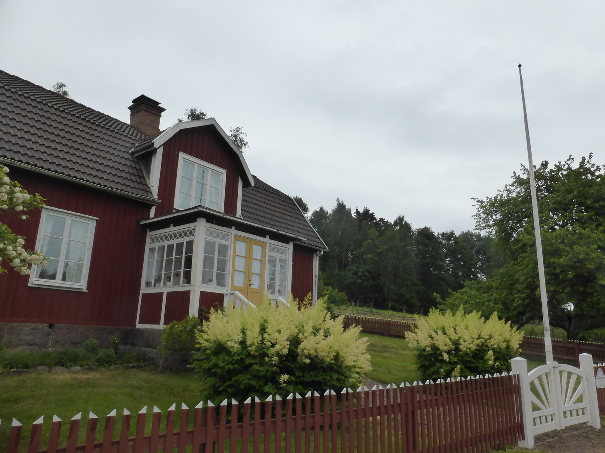
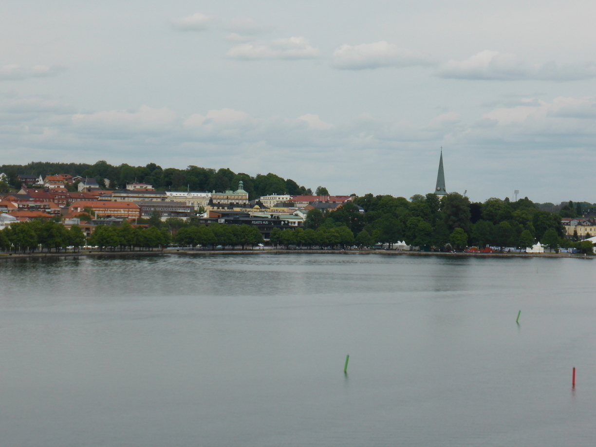
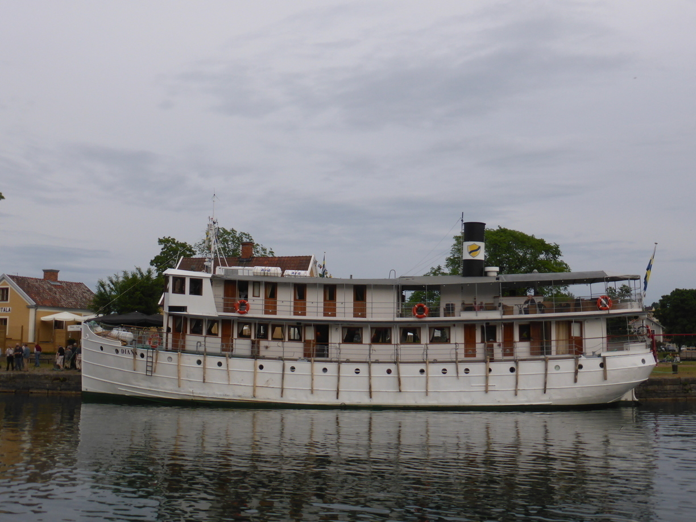

Vätternrunde und abermals Kühe
Tag 20
Lemnhult - Mariannelund 57 km
Ich konnte leider nicht für immer in Lemnhult bleiben und deshalb ging es weiter. Um den Einstieg nach den ganzen Ruhetagen zu erleichtern sollte es zunächst unter Begleitung meines Vaters und ohne Gepäck weiter gehen. Mutti sollte uns mit Gepäck und Wohnwagen an einem vereinbarten Campingplatz treffen. Nach ungefähr 10 km fing es an zu regnen und hörte auch nicht auf. Leider waren auch meine Regenklamotten bei dem restlichen Gepäck im Auto. Als wir gerade völlig durchnässt in Mariannelund Zuflucht suchten kam zufälliger weise auch der Begleigwagen gerade durch den Ort. Am Ende konnten wir der Versuchung nicht wiederstehen uns ein Stück mitholen zu lassen. Vielleicht hole ich das verlorene Stück irgentwann nach.
Da wir nun mit dem Auto unterwegs waren konnten wir auch den Umweg nach Katthult machen, den wir zuvor aufgrund des Regens an den Nagel hängen wollten. Der Katthulthof diente als Drehplatz für die Filme um Emil/Michel aus Lönneberga. Dort gab unter Anderem den Schuppen zu sehen, in dem Emil/Michel immer eingesperrt wurde. Außerdem das Klohäuschen, in dem Emichel seinen Vater einsperrte. Ich hab es mir nicht nehmen lassen auch meinen Vater dort einzusperren. Zudem natürlich das Wohnhaus der Familie mit dem berühmten Fahnenmast, an dem Emichel seine Schwester hochzog. Leider hatte ich keine kleine Schwester dabei. 
Kurz vorm Campingplatz auf Torpön gab es noch diese nette Köhlerhütte zu sehen.
Auf dem Camping teilten wir uns einen Stellplatz. Angesichts der Größe des Wohnwagens und des Zeltes kein Thema.
Tag 21
Torpön - Motala 89 km
Am nächsten Morgen hieß es Abschied nehmen. Ich fuhr ganz alleine auf der Fähre von der Insel runter. Die wunderbaren Landschaft konnte ich zunächst nicht richtig genießen, da ich zu sehr mit dem Gedanken beschäftigt war jetzt wieder auf mich alleine gestellt zu sein. Gegen Nachmittag kam ich an einen Camping am Vätternsee, der überraschend voll war. Da die Nacht dort 290 Kronen kosten sollte, fuhr ich schnell weiter. Auf dem Weg nach Motala viel mir auf, dass sehr viele Autos und Wohnmobile mit Rennrädern auf dem Gepäckträger unterwegs waren.  Am etwas günstigeren Campingplatz in Motala (220 SEK) wurde ich dann von meinen Nachbarn aufgeklärt, dass am Abend die Vätternrunde startete. Bei dieser geht es 300 km rund um den See. Die Starts gehen von 19:30 an im 2-Minutentakt. Meine Nachbar waren ein Paar aus Schweden, dass mit dem Fahrrad gerade aus Marokko zurück gekommen war und nun mit einer Runde um den Vätternssee das ganze abschließen wollte. Ein weiterer Nachbar, ein Deutscher, war ebenfalls mit den Rad angereist, um zum fünften Mal an dem Event teilzunehmen. Mit ihm fuhr ich am Ende noch in die Stadt. Er musste zum Start und ich wollte mit ein paar Starts und das zugehöhrnde Spektakel anschauen. 
Nach einer Runde durch den Hafen, wo es ein paar Schiffchen zu bewundern gab, stellte ich mich an die Strecke. Dort traff ich Conny, der die Runde bereits hinter sich hatte. Er kam aus Stockholm und war ebenfalls mit dem Touringrad unterwegs. Er war vor ein paar Jahren auch beim offiziellen Rennen mitgefahren. Zusammen mit seinem Bruder auf dem Tandem. Wir haben uns lange unterhalten und den Startern zugesehen. Dann viel ihm ein, dass er noch eine Dusche und einen Platz zum Zelten brauchte und somit trennten sich unsere Wege.
Ich ging nochmals die Promenade entlang und genoß das freie Wlan und die Aussicht.
Tag 22
Motala - Tjälvesta 77 km
Auf dem Weg von Motala kam ich zunächst am Kanal entlang. Vielleicht erkennt jemand das Schiff wieder.
Dann ging es immer entlang des Sverigeledens. Dieser Radweg führt durch ganz Schweden und bis zur finnischen Grenze. Er ist immer gut ausgeschildert, so dass ich mich nicht verfahren kann.
Automatische Rasenmäher sind der letzte Schrei in Schweden. Aber anscheinend auch nicht ganz ungefährlich.
Kurz vor Ende hab ich noch einen Abstecher in ein Naturreservat unternommen. Dort wurde ich doch glatt von Kühen verfolgt. 
Einen Kilometer nach dem Naturreservat kam ich an einen super Badeplatz. Dort habe ich auch mein Zelt aufgeschlagen und bin eine Runde geschwommen. Der Platz war noch bis zum Abend hin gut besucht, aber keiner störte sich an meiner Anwesenheit.